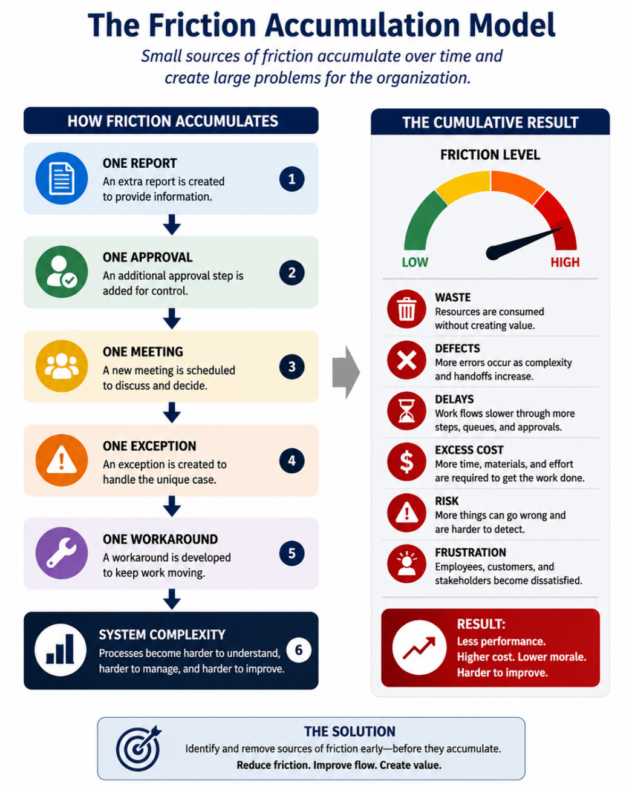

The MBFC+SH Compass
Every decision moves an organization somewhere. MBFC+SH helps leaders, managers, teams, and individuals evaluate whether a decision creates net improvement by moving toward More, Better, Faster, Cheaper, Safer, and Happier while reducing Waste, Defects, Delays, Excess Cost, Risk, and Frustration.
The goal is not activity. The goal is net improvement.

Every decision moves an organization somewhere. The question is whether it creates net improvement.
Why Improvement Efforts Fail
Many organizations pursue improvement while unintentionally creating new problems. MBFC+SH helps teams recognize the tradeoffs before the decision becomes expensive.
Value Creation vs. Organizational Friction
MBFC+SH provides a simple visual language for evaluating both sides of improvement: the desired outcomes a decision may create and the friction it may introduce.

Move toward More, Better, Faster, Cheaper, Safer, and Happier by reducing Waste, Defects, Delays, Excess Cost, Risk, and Frustration.
The MBFC+SH Framework: Value Creation and Organizational Friction
The book presents MBFC+SH as two related lists: desired outcomes that create value and forms of organizational friction that prevent improvement. The goal is to move toward value creation while reducing friction.
Value Creation
The six desired outcomes represent the forms of value organizations seek to create.
Organizational Friction
The six forms of organizational friction represent common barriers that limit performance and improvement.
Book + Training + Consulting
MBFC+SH is more than a book. It is a practical framework for helping organizations improve decisions, reduce friction, and build a stronger culture of continuous improvement.
Workshops and consulting engagements can be tailored for leadership teams, operations teams, administrative teams, nonprofit organizations, government agencies, and small businesses.
Request Training or Consulting InformationHow the Decision Framework Works
MBFC+SH evaluates each proposed decision by asking four practical questions: What value could it create? What friction could it introduce? What tradeoffs are involved? Does the decision create net improvement for the organization overall?

The MBFC+SH Decision Framework helps evaluate value creation, friction, tradeoffs, and net improvement.
Why Friction Matters
Small sources of friction accumulate over time. One report, one approval, one meeting, one exception, and one workaround can eventually become system complexity.

Identify and remove sources of friction early before they accumulate into larger problems.
The MBFC+SH Decision Funnel
The Decision Funnel turns the framework into a practical decision process. A proposed decision is evaluated through value creation, organizational friction, tradeoff analysis, and the final test of net improvement.

Proceed, revise, or reject based on whether the benefits outweigh the friction.
From Local Improvement to System Improvement
Many organizations improve one area while unintentionally creating problems elsewhere. MBFC+SH helps teams evaluate decisions across the whole system, not just within one silo.

Improvement happens when the whole system gets better, not just one part.
Common Problems MBFC+SH Helps Address
Inside the Book
MBFC+SH provides a common language for improvement, a practical decision framework, real-world examples, and tools for applying the framework to meetings, policies, controls, capital investments, and continuous improvement.
Who Should Read MBFC+SH?
Example Applications
Take the MBFC+SH Friction Test
Is your organization experiencing friction? If several of these sound familiar, the MBFC+SH tools may help identify what is slowing improvement.
Start with the Organizational Audit or the Friction Identification & Prioritization Toolkit.
Book Preview


Download the MBFC+SH Tools
Use these appendix tools to evaluate decisions, identify friction, review controls, and apply the MBFC+SH framework in real-world situations.

About the Author
Daniel Nichols is an operations leader with experience in manufacturing, supply chain, logistics, process improvement, and practical business decision-making. MBFC+SH distills lessons learned from real-world decisions into a practical framework for evaluating tradeoffs, reducing friction, and creating lasting improvement.
Ready to Reduce Friction and Improve Decisions?
Use the book, tools, training, or consulting support to begin applying MBFC+SH.
Buy the Book Request Training Bulk Book Orders